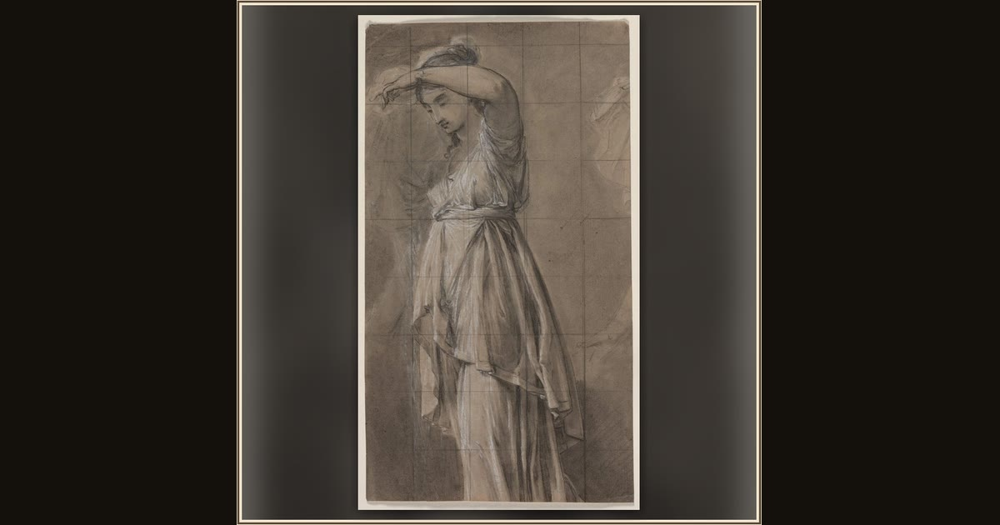

Study for Penelope
Anicet Charles Gabriel Lemonnier · c. 1806 · Cleveland Museum of Art · Cleveland, USA
A quiet chalk study of faithful Penelope, who waited twenty long years for Odysseus while cleverly outwitting the suitors at her palace. Explore its place in Book XIX of the Odyssey.